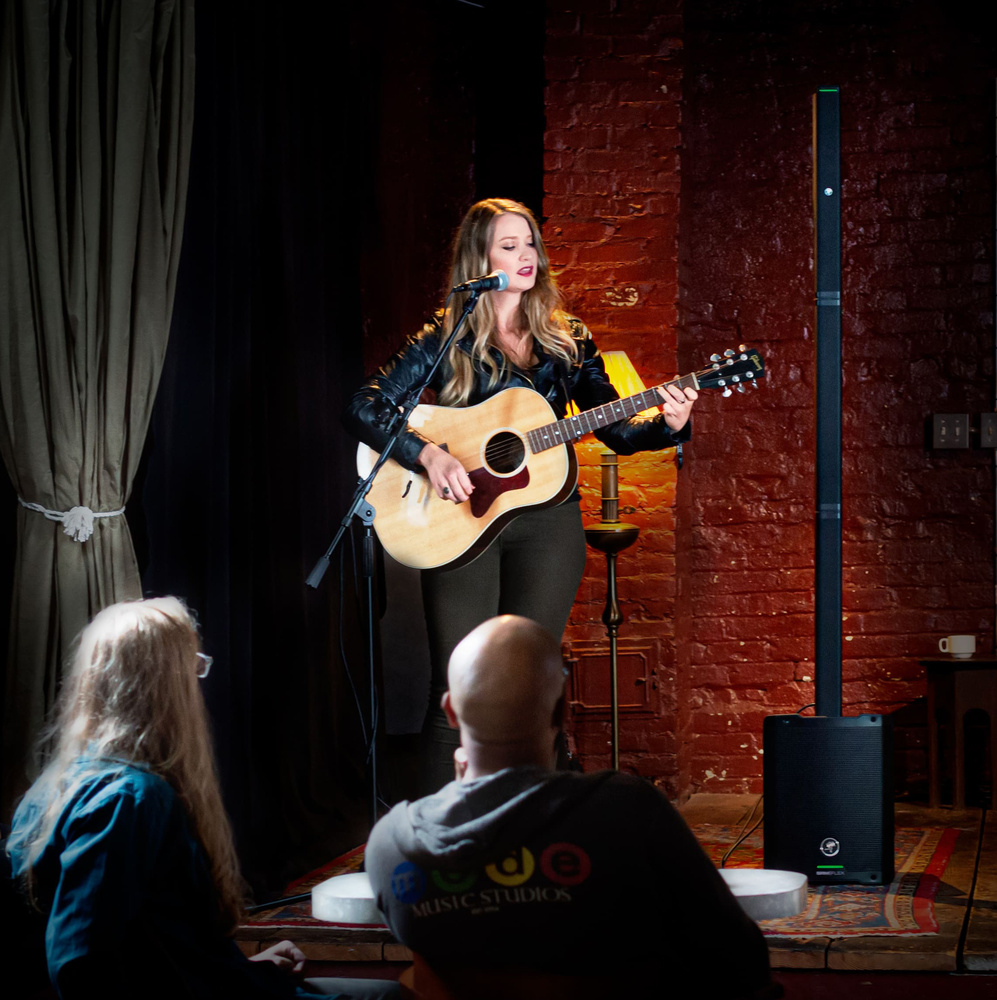
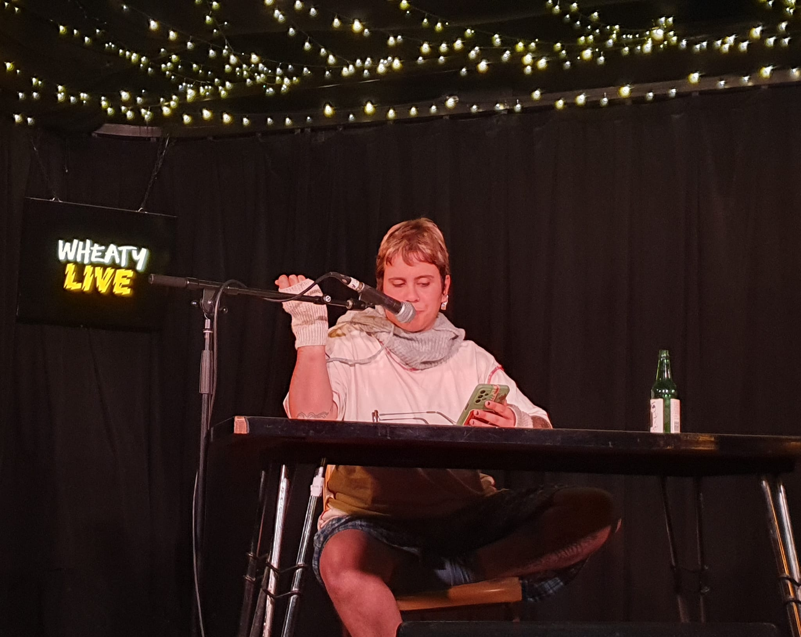

OpenMicPhilly Hub is your digital link to the powerful, pulsing creative community of West Philadelphia. Born from a passion for performance and connection, our goal is to make open mics more accessible, welcoming, and collaborative for all — from poets and singers to beatmakers and storytellers.
We’re more than just a calendar. We’re a space to build, collaborate, and grow — whether you're looking for your next duo partner, a stage to test new work, or just to be inspired. The Hub amplifies voices often overlooked and provides tools to build bridges in the local scene.
Below are glimpses from recent link-ups, jams, and open mic nights hosted across West Philly. Let’s keep the rhythm alive.
To create a vibrant, inclusive platform that connects artists, fosters collaboration, and celebrates the diverse voices of West Philadelphia.
We aim to break down barriers to participation, ensuring that everyone has a chance to share their art and connect with others in the community.
How can I get involved? - You can join our events, collaborate with other artists, or simply follow us on social media to stay updated.
Do I need to register for events? - Registration is encouraged but not always required. Check each event's details for specifics.
Can I host my own event? - Absolutely! We welcome community members to host their own open mics or collaborative sessions. Contact us for more details.
We strive to make our events accessible to everyone. If you have specific needs or require accommodations, please reach out to us in advance so we can ensure a welcoming experience for all.
We are committed to providing a safe and inclusive environment for all artists and attendees. If you have any concerns or suggestions, please let us know.

